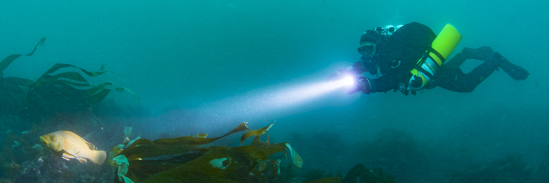

Welcome, I'm Dave - a software engineer, international conference speaker, and Open Source Software author.
I specialise in keeping software maintainable for the long term — helping teams use static analysis, automated testing and code review to keep large codebases safe to change for years, even decades.
With over two decades of experience in the tech industry, I've worked on many long-running, successful projects. I'm currently the owner and director of Lamp Bristol. Lamp builds the software behind successful start-ups and businesses.
I love sharing my knowledge with others; I'm a regular conference speaker and have spoken at events around the world. I'm also proud to be involved in organising the PHP-SW meetup. These events offer valuable opportunities to learn from and network with like-minded professionals.
I'm currently working on the following Open Source projects: SARB (Static Analysis Results Baseliner) and the PHP language extensions library.
Subscribe to the RSS feed for updates on new articles and talks.